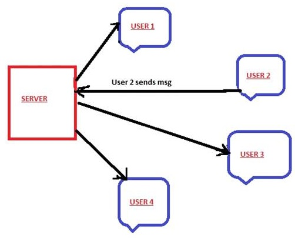

Signal R
In this blog am going to take you through step by step process to create a ChatApplication. You guys might have come across many applications where you can join a chat room and then send messages to different people in that room. We will do the same using SignalR package. In the process of doing it we will also learn how the SignalR works.Though this blog is mainly focused on learning SignalR, it will be beneficial to know the basics.
Basics Required- C# programming or any other programming language
- Familiarity with Visual Studio 2017
- What is SignalR
- How to install it
- Issues I faced while installing and how to fix them
- Step by step approach to create a Chat application using Visual Studio which mimics room chat(multiple users can chat)
- Complete source code is shared on Git
- A quick 2 min demo video
- Step by step approach to create a Chat application using Visual Studio which mimics room chat(multiple users can chat)
So What is SignalR Ever wondered how chat applications work? How do people chat with each other (either in a group or a private chat with one person). You might be aware of client server architecture and you may get that this approach won’t work in chat room applications. So, lets take a step back and understand what is client server architecture and how it is different from chat applications In Client Server architecture, Client i.e the Browser(Chrome, Internet Explorer etc) makes a request for a particular Resource on the Web. Let’s take an eg to understand better. Suppose there is a shopping website which sells “Shoes” and “Clothes”. Lets also assume that www.abc.com/shoes is the endpoint for shoes and in in www.abc.com/clothes is the endpoint for clothes Consider there is a User called Bob and he types in www.abc.com/shoes on the browser. The request goes to the Server and the Server processes the request and returns all the shoes on their website. Bob sees all the shoes he wanted to see. Now he decides to see all clothes on abc website and therefore enters www.abc.com/clothes and this time Server shows all results of clothes to Bob. Bob is happy 😊.


Now as you may be aware HTTP calls are stateless. What that means is that Server doesn’t know that it was the same User Bob who made a request to Display all Clothes and Shoes in the store .As far as Server is concerned, it just got the request from the Client and it responded by serving it. If we need the server to remember the Client, then we either need to use HTTP Cookies, maintain Server Side Sessions,hidden variable,URL-rewritring etc. Going to depth of these is out of scope of this blog. Now If you go back to eg of Bob, it was Bob/Client who was requesting the Server for details everytime and not the other way around. If you wait a second and absorb above details and give a thought about it,you can find that above approach is not a efficient way to develop any chat applications.In any chat applications,2 users (private chat) or more Users(group chat) are connected to each other and they chat. Each of the User involved in the chat , expect to see the other person’s message instantly. It’s not like User will keep on hitting (refresh/f5) to see whether the other guy part of the chat typed any message etc.This is where Push Architecture comes into picture. Push architecture means that it is the server who pushes the message to the clients (registered)/browser . So In the case of chat application, the moment user types a message, the message goes to the server and the server then broadcasts the message to all the clients. SignalR Library helps us do exactly above
So Here comes SignalR....
- It is a ASP.NET Library
- Helps in adding real time web functionality to applications
- Now in my eg above, I considered a chat application. But our use case is just not limited to chat application. Actually any application where user has to keep on refreshing is a candidate for SignalR. Eg, dashboards, sports websites which shows live scores etc
- Server pushes data to the client
- Has wrapper functions which makes developers life easy
- Abstracts from the different techniques to implement push data
SignalR- Connection Management
- Manages Connections automatically
- Broadcasts messages to the connected clients simultaneously
- Can send messages to specific client
- Connection between Client and Server is persistent, unlike HTTP connections which are stateless
In order to understand better, Lets take an eg. Lets assume User 1,User 2,User 3 and User 4 are all connected to a chat room .Now say User 2 types a message. Server receives it and send it all the other 3 clients simultaneously. The same is depicted in the diagram.( signalR1)
Now when I said "Push",there are various varieties of "Push" .Eg are Periodic Polling, Long Polling,ForeverFrame,SSE(Server Sent Events) ,Web Sockets In this blog, am showing the Hubs programming modal though Persistent Connections model is also available but is less popular.
What are Hubs....
- Hubs are classes to implement push services in SignalR
- Abstraction on top of Persistent Connection programming methodology
- Provide a higher level Remote Procedure Call framework(What is RPC…we will see in next section)
- Perfect for different types of messages to send between Server and client
- No need to take care of Serialization/Deserialization etc
- Clients property allows to access all clients connected to hub
- Can Return simple type (eg int,string,long etc) or complex type (objects of complex type) or Task
- Complex objects and arrays of objects are automatically serialized/deserialized to/from JSON
- Communication between Hub on the server side and Client/Browser is JSON
RPC- What is Remote procedure call?
Above, I briefly mentioned about RPC.RPC is a distributed computing methodology. RPC is a concept which enables a computer program to execute a method or a piece of program located even in another computer on a network. In the Object oriented world, there is equivalent to it called Remote Method Invocation (RMI). For eg Java has JavaRMI.SignalR enables us to perform server to client RPCs by providing wrapper functions through APIs which abstracts the complexity of performing RPCs. i.e Server which run .NET core code can call Javascript functions running on the client’s browser.
Lets do a small egample to get a better handle of the same. I have shared the whole source code in the git repository